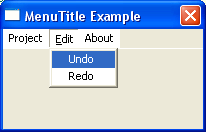

MenuTitle()
语法
MenuTitle(Title$)概要
Creates a new title item on the menu.
参数
Title$ The text to display in the title item. On Windows you can use the special '&' character to underline a specific letter:
"&File" will actually display: File
返回值
无.
示例
If OpenWindow(0, 200, 200, 200, 100, "MenuTitle Example") If CreateMenu(0, WindowID(0)) MenuTitle("Project") ; normal menu title with following item MenuItem(1, "Open") MenuItem(2, "Close") MenuTitle("&Edit") ; menu title with underlined character, the underline ; will only be displayed, when called with F10 key MenuItem(3, "Undo") MenuItem(4, "Redo") MenuTitle("About") ; only menu title EndIf Repeat : Until WaitWindowEvent() = #PB_Event_CloseWindow EndIf
参阅
MenuItem(), MenuBar(), OpenSubMenu()
已支持操作系统
所有